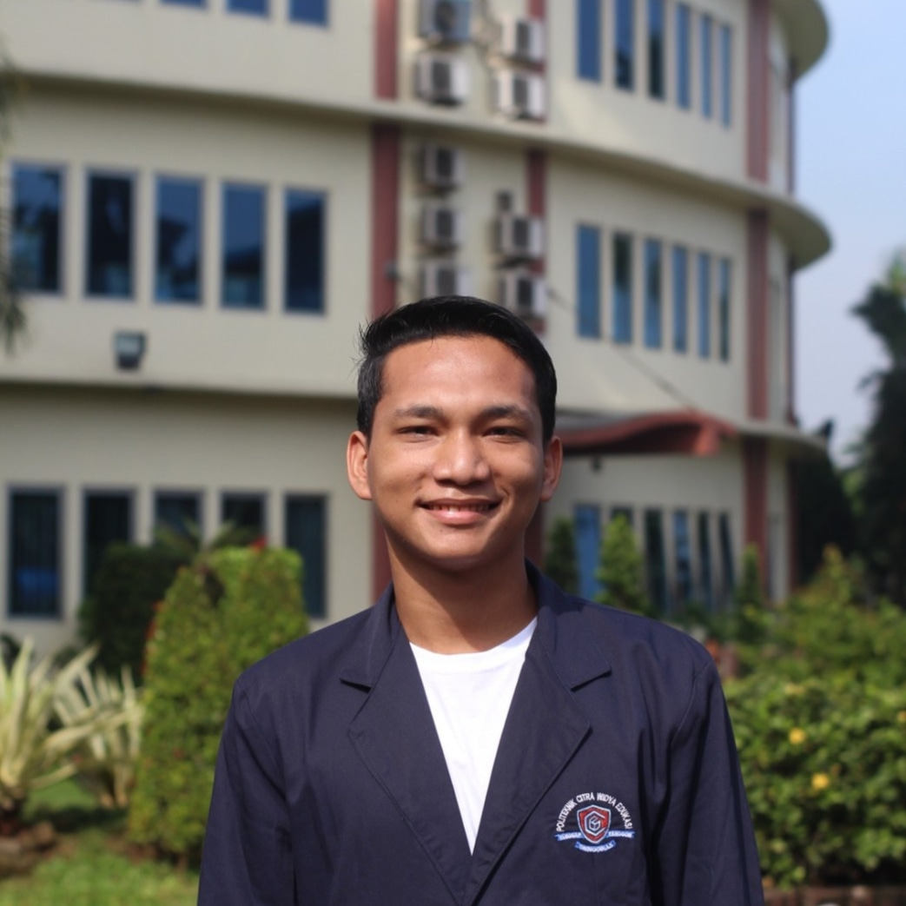

Plantation Researcher | Awardee Scholarship Of BPDP 2022
Lihat Prestasi Nasional 📄 Download CVSaya adalah mahasiswa Teknologi Produksi Tanaman Perkebunan yang memiliki komitmen tinggi dan etos kerja kuat. Aktif dalam berbagai kompetisi ilmiah tingkat nasional dan memiliki pengalaman kepemimpinan dalam organisasi kemahasiswaan serta industri kelapa sawit. Berfokus pada pengembangan solusi inovatif, literasi, dan pembangunan berkelanjutan di sektor perkebunan.
Mentri Keagamaan (2022 - 2023)
Staf Administrasi (2022 - 2023)
Anggota (2022 - Sekarang)
Koordinator Bidang Kampanye Positif (2023 - 2024)
PT Triputra Agro Persada Group
Nov 2024 – Jul 2025 • 9 bulan
Muaro Jambi, Jambi, Indonesia
Politeknik Kelapa Sawit Citra Widya Edukasi
Jul 2024 – Agu 2024 • 2 bulan
Subang, Jawa Barat, Indonesia
UBP CLASH 11 (2026) - Subtema: Cerdas Literasi di Era Informasi.
Tema: "GLAM: Gema Literasi Abadi dalam Memori".
Lomba Esai Nasional Program LITERASI 2045 (2025)
Tema: "Peran Generasi Muda dalam Mewujudkan Indonesia Emas di Berbagai Sektor".
Lomba Essay Tingkat Nasional (LETIN) 7 - Universitas Janabadra.
Pekan Esai Nasional Akademik (PENA 10)
Lomba Opini Nasional Program Literasi 2045
Penelitian & Budidaya Perkebunan
Penulisan Ilmiah & Analisis Data
Kepemimpinan & Manajemen Organisasi